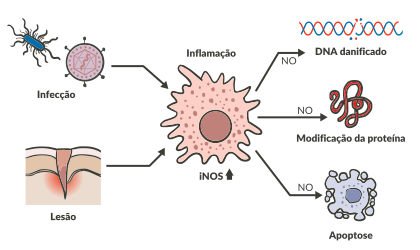

Participação do óxido nítrico no processo inflamatório.

Um segundo papel importante do óxido nítrico para o processo inflamatório é na indução da explosão respiratória, estratégia de defesa de várias células imunológicas com liberação de espécies reativas de oxigênio, mas que, no caso de inflamação de origem não infecciosa, é danosa para os tecidos, e contribui para sua cronificação. O óxido nítrico é produzido pela enzima óxido nítrico sintetase (NOS, podendo ser induzível – iNOS – ou constitutiva – cNOS), secretada por inúmeras células, incluindo células endoteliais, células de defesa, fibroblastos, queratinócitos, condrócitos etc.